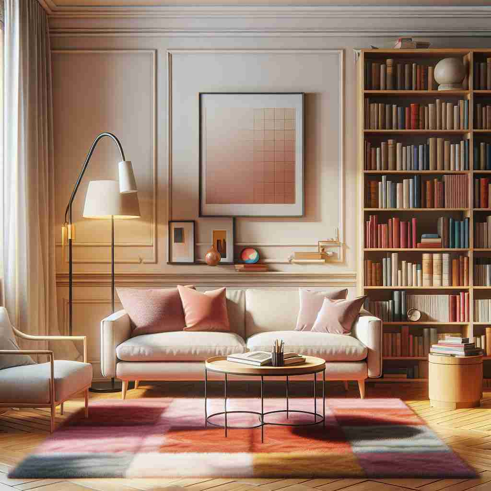

💬 The children love to play in the room with their toys.

💬 The family is relaxing in the living room while watching TV.
💬 The chef works in the kitchen room to prepare delicious meals.

💬 This is a cozy room with a soft sofa and warm light.
🔈 [ruːm][rʊm]
🗝️ n. an enclosed space within a building with walls, floor, and ceiling
🖼️ 想象在一个温暖的客厅里，有舒适的沙发、壁炉燃烧着木柴，墙上挂着温馨的家庭照片。这个空间被四面墙、地板和天花板包围，完美地诠释了'room'作为一间房间的含义。
🔍 想象一个封闭的空间，这就是'room'的核心含义。从这个具体的空间概念，我们可以延伸到抽象的机会空间，或者用来指代空间里的人。当'room'作为动词时，它描述了人们如何使用或提供这样的空间。通过联想这个基本的'空间'概念，你可以更容易理解和记忆'room'的各种用法。
💬 The children love to play in the room with their toys.
💬 The family is relaxing in the living room while watching TV.
💬 The chef works in the kitchen room to prepare delicious meals.
💬 This is a cozy room with a soft sofa and warm light.
🌳 词根来源于古英语 'rum'，意为宽敞或空间。虽然 'room' 是个基础词，通常不与前缀或后缀结合，但它仍然可以拓展出不同的意思，比如房间或空间。
💡 可以将 'room' 联想为一个有空间让人居住或使用的地方。当想到 'room' 时，记住它是有一定功能的空间，如卧室或浴室。
🗝️ n. space or opportunity for something to happen or exist
🖼️ 在一个忙碌的厨房中，小桌子上堆满了蔬菜和调料。厨师检查料理台，心里想着，是否还有'room'来放一把新的刀？这个场景展现了'room'作为空间或机会的定义。
💬 There's still room for improvement in your work.
❓ 将物理空间的概念扩展到抽象领域
🗝️ n. people in a room
🖼️ 在一个热闹的聚会上，整个房间都充满了欢声笑语。朋友们三三两两地聚在一起，分享着有趣的故事，这就是'room'指房间里所有人的场景。
💬 The whole room burst into applause.
❓ 用容纳空间代指其中的人
🗝️ v. to occupy a shared space
🖼️ 在一所大学宿舍中，两位室友正在商讨如何更好地'room'，确保共同生活的和谐与便利。
💬 I roomed with my best friend in college.
❓ 将名词用作动词，表示共享空间
🗝️ v. to provide with lodging
🖼️ 在一个温馨的乡村旅馆，店主微笑着欢迎新来的游客，并说：'我们会为您在上层安排一个舒适的房间。'这个场景正是'room'作为提供住宿的含义。
💬 The hotel can room up to 500 guests.
❓ 提供空间给他人使用